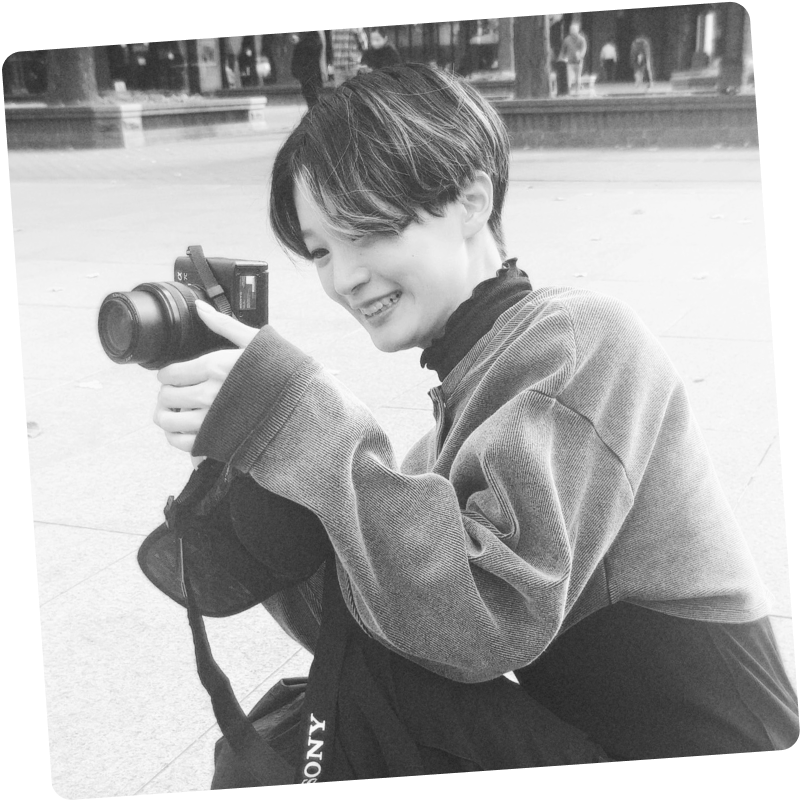
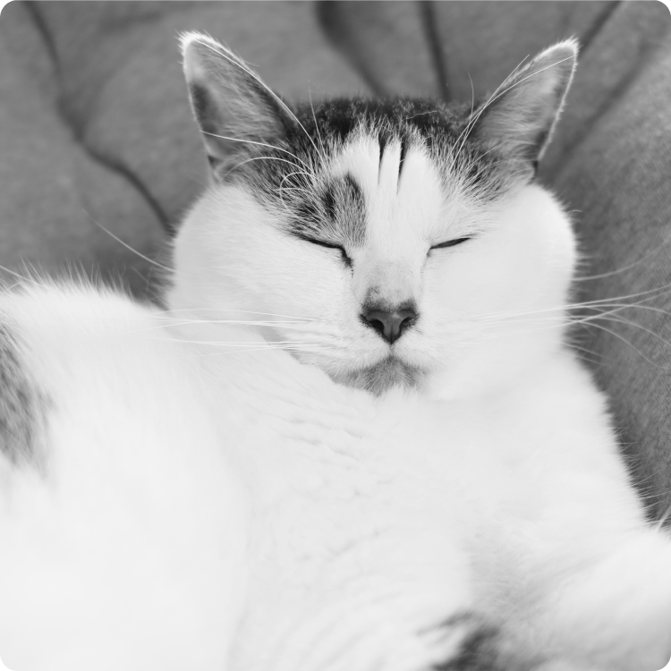

ABOUT ME
Yuri Araki荒木 友李
- Birth Place：
- 北海道札幌市
- Birth Day：
- 11.11
- Like&Hobby：
- Animals・Travel・Onsen・Camping・Games・Photo etc...
札幌市南区の山に囲まれた土地で、走りまわったり虫を追いかけたりしながら育つ。 小さな頃から自然や生き物が大好きで、現在も猫・フグ・カメなどと暮らしている。好きな教科は図工・家庭科・美術で、色々なものづくりをしていた
高校は商業高校でアーチェリー部に所属し、インターハイや国体への参加を経験する。 大学では、幼い頃から憧れていた飼育員を目指して動物看護学や行動学などを学び、ゼミで野生の海生哺乳類や水族館での研究を行う。また4年間YOSAKOIサークルに所属。約100人のメンバーと交流しながら作品作りにも携わるなどコミュニケーション力を培う上で大きな経験となった。

卒業後は千葉県の水族館に就職し、3年間ベルーガ（シロイルカ）の担当として飼育やパフォーマンス、トレーニングなどの業務を行う。 いずれは北海道へ戻りたいと思っていたため、小樽市の小さな水族館に転職。4年間イルカ・オタリア・ペンギンの担当として業務をしながら、常に変わりゆく動物たちや業界に目を向け、動物たちとお客様のために自分ができることを考えるようになる。好きなものづくりを活かして動物たちの環境を良くする工夫やイベントの企画、解説板・ポスター・グッズの制作など様々な業務も行い、自ら考えることの楽しさと生きがいを感じる。
取り巻く環境の変化で今後について考えることが増え、ここまで行ってきたものづくりやデザインの経験から次第にWeb業界へ興味を持つようになり転職を決意、WSSに入学する。 半年間学ぶ中で、コーディングやプログラミングを通して自らの手で見た目や機能を作ったり考える過程に楽しさを感じるようになり、フロントエンドエンジニアを目指して勉強中。

My 3 Words
３倍努力
人の倍かかるなら人の3倍努力をする。
どんなに自信が無くてもこつこつとやる。
実力は、気が付いたらついてくる。
停滞は衰退
どんな時でも時間や環境は変化している。
そのことを常に忘れず、自分を変えていく。
生き物たちが教えてくれた人生の指針。
七転び八起き
失敗した。うまくいかなかった。
落ち込んでも、踏ん張って考え続ける。
それじゃあ次はどうしようか。
Hobbys Gallary
